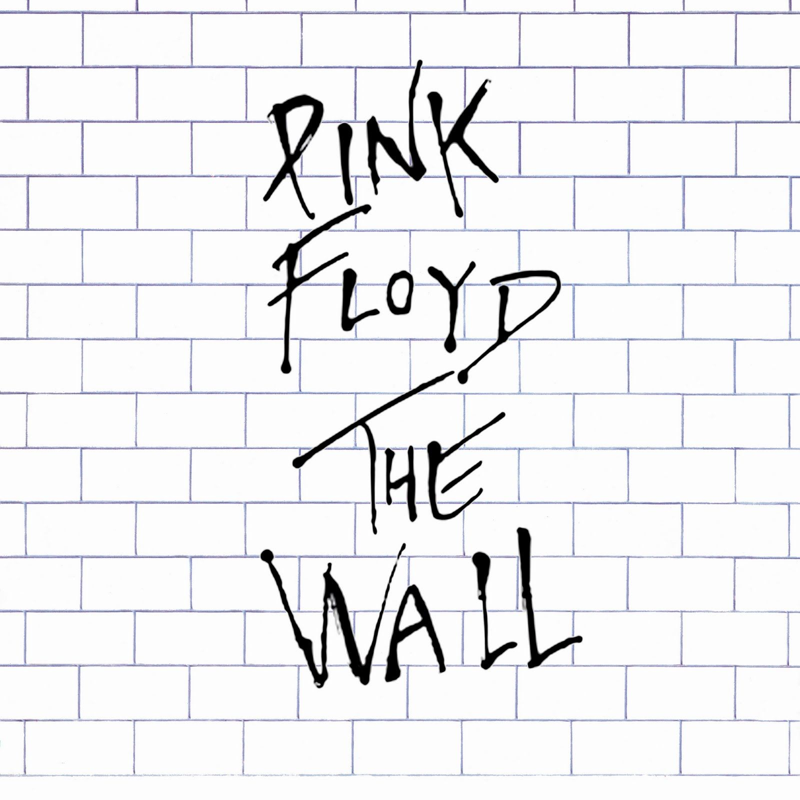

My name is Luigi D'Acunto I am 19 years old and in my second term at NEIT striving to get my bachelors in the cyber security program. My interests include things such as; model building, tabletop board games,video games, and writing, also I'm trying to get into digital artwork. I make models primarily for the game Warhammer: 40K which is in a far future setting with a grimdark theme, the story and the designs of the characters makes it my favorite series at the moment. I don't read too much; outside of the one book that I really took time to read which was The Hobbit, so I don't have a favorite book but I do enjoy movies and my favorites are the Lord othe the rings series as it has a lot of high fantasy elements that I enjoy in other media such as Dungeons & Dragons. My favorite song is Goodbye Blue Sky by Pink Floyd because of it's motif and themes it utilizes. So that's just a little bit about me, thank you for looking at my page and have a good day.
